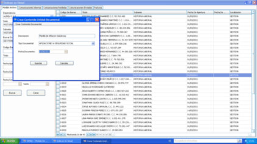
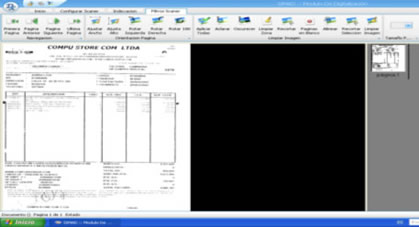
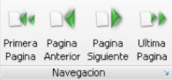
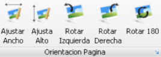
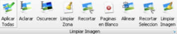

| Seleccione el tema sobre el que necesita ayuda. |
| Inicio |
| SIMADIG 1.0 Indexar Documentos |
Con este menú podemos realizar el proceso de indexación de imágenes al aplicativo SIMAD.
 Para realizar la indexación de documentos en SIMAD 4.0 realice los siguientes pasos.
Para realizar la indexación de documentos en SIMAD 4.0 realice los siguientes pasos.
 Seleccione el modulo de SIMAD al cual quiere indexar la imagen actual, lo puede hacer sobre los módulos de Archivo de gestión, Central e histórico, también sobre los módulos de correspondencia interna, externa enviada y externa recibida y por ultimo sobre el módulo de facturas.
Seleccione el modulo de SIMAD al cual quiere indexar la imagen actual, lo puede hacer sobre los módulos de Archivo de gestión, Central e histórico, también sobre los módulos de correspondencia interna, externa enviada y externa recibida y por ultimo sobre el módulo de facturas.
 Al ingresar los criterios de búsqueda que muestra cada formulario de entrada y presionar el icono BUSCAR, el sistema listará los registros encontrado con los criterios asignados en las búsqueda en una lista en la parte izquierda de la pantalla.
Al ingresar los criterios de búsqueda que muestra cada formulario de entrada y presionar el icono BUSCAR, el sistema listará los registros encontrado con los criterios asignados en las búsqueda en una lista en la parte izquierda de la pantalla.
 Presione click sobre el recuadro ubicado en la primera columna de la lista, el sistema le informará que ha sido indexada la imagen al registro del SIMAD.
Presione click sobre el recuadro ubicado en la primera columna de la lista, el sistema le informará que ha sido indexada la imagen al registro del SIMAD.
 NOTA: El sistema por defecto hará el cargue de todos los tipos documentales digitados en el expediente, en caso de no haber ingresado ningún tipo documental el sistema le habilitará la opción para ingresar un tipo documental de la siguiente forma:
NOTA: El sistema por defecto hará el cargue de todos los tipos documentales digitados en el expediente, en caso de no haber ingresado ningún tipo documental el sistema le habilitará la opción para ingresar un tipo documental de la siguiente forma:

- Deberá ingresar la descripción del tipo seleccionar el tipo de documento a que corresponda y finalizar con la fecha del documento que esta indexando.
Herramientas de Escaner

Una vez es digitalizado el documento se puede seleccionar la opción Herramientas Scaner y se habilitarán las siguientes funciones que agilizará el mejoramiento de la calidad de la imagen:
- Navegación: Permite desplazarse en las diferentes imágenes del archivo.

- Orientación Página: Dispone de funciones como: ajustar el ancho, Ajustar el alto, Rotar a la izquierda, Rotara la derecha, Rotar 180 grados.

Estas funciones se aplican a todas las imágenes que conforman el archivo.
- Limpiar Imagen: Facilitan los procesos de limpieza de la imagen a través de las siguientes herramientas:

Aclarar, Oscurecer, limpiar zona, Recortar, eliminar páginas en blanco, alinear, recortar selección y limpiar imagen.